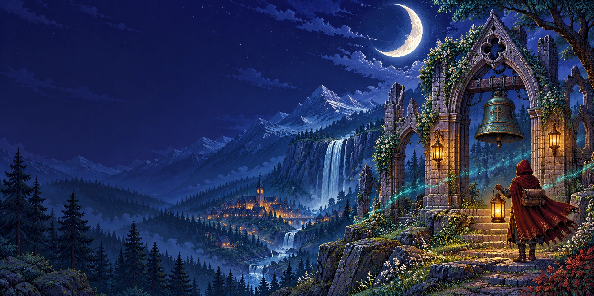
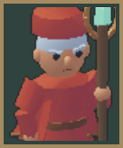
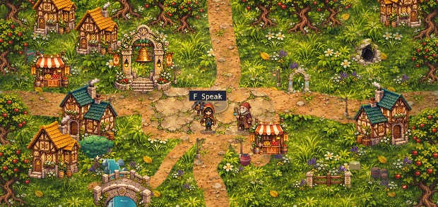
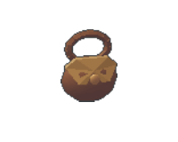

Veilbound
Echoes of the Hollow Crown

Merin Bellwarden
“Rowan, Ione rang the west bell three nights ago. Her lantern came back alone.”
Rowan’s field journal
Four dungeons lie in Aurelia. Six more wait beyond the veil. Chart Rowan’s route and inspect the instruments that open each path.
Aurelia
◆ Select a region to inspect it.

Bellwick Village
Find Merin on the village green. Ring the bell to restore your supplies before setting out for Mossbell Sanctuary.
The satchel
Equip two instruments at a time. The tool you bring home from a dungeon can open an old path.

Burst Satchel
Burst charges open cracked masonry. Pots replenish charges.
Lantern-bearer’s handbook
Your first quest
Collect Ione’s Burst Satchel in Bellwick. Follow the roads northwest to Mossbell Sanctuary. Explore its chambers, recover the Gale Disc, and face the Briar Cantor.
▶ Play VeilboundKeyboard controls
- Move
- WASD / Arrow keys
- Strike / Guard
- J / Hold K
- Dodge / Interact
- Space / F
- Use instruments
- Q / E
- Equipment / Map / Pause
- Tab / M / Esc
Touch & gamepad
On touch screens, use the directional pad on the left and action buttons on the right. On a gamepad, move with the left stick or D-pad. The bottom face button strikes and the left bumper guards.
Settings & saves
Open Settings from the title or pause menu to adjust graphics, volume, and motion. Progress saves in this browser. Use Export save and Import save in the pause menu to move your journey to another device.